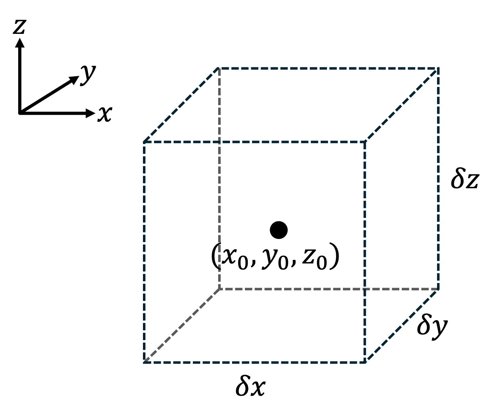
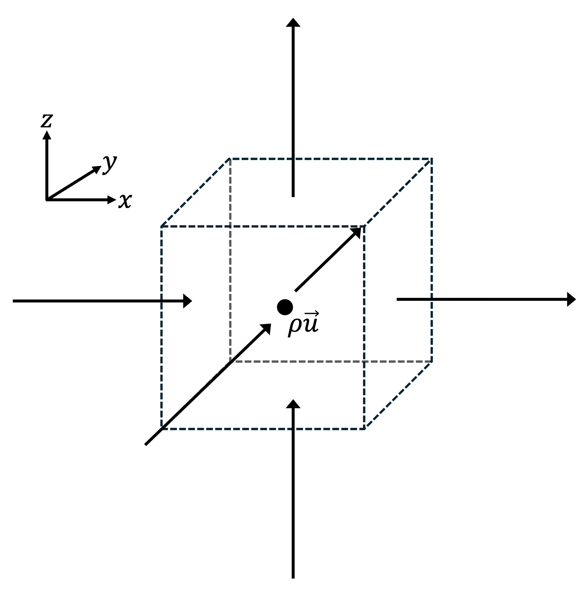
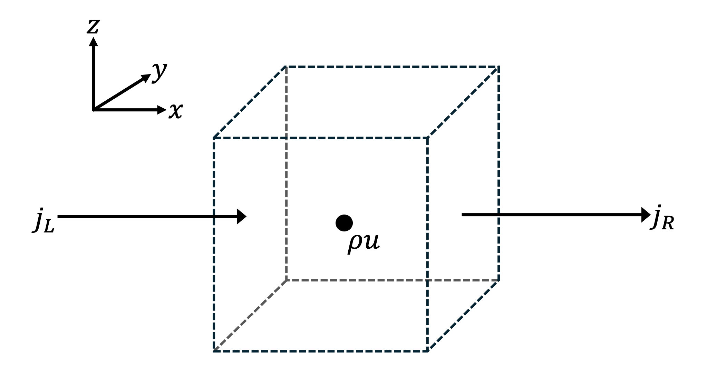

Section 6.2 Eulerian perspective
While conservation of mass is a reasonable assumption for a moving air parcel as long as it does not exchange mass with its environment, it is not reasonable to say mass is unchanging at any given location in Earth’s atmosphere that is fixed relative to the planet. This is because properties of the fluid atmosphere, including its mass, are transported over Earth’s surface and through locations in the atmosphere by wind flow, and differences between inflow and outflow rates lead to changes in the atmosphere’s properties as measured at a given location. This can be expressed as
\begin{equation}
\frac{\partial f}{\partial t} = \text{Inflow Rate} - \text{Outflow Rate}\tag{6.2.1}
\end{equation}
where \(f\) is the property of interest and the right-hand side is the difference between its inflow and outflow rates. In other words, the right-hand side is the net flow of \(f\text{.}\)
A continuity equation is a more detailed form of (6.2.1) that describes how a property of interest is transported through space by continuous fluid flow. When a continuity equation does not include sources or sinks, it is a statement of local conservation, or conservation at a fixed location.
A continuity equation has the form
\begin{equation}
\frac{\partial \rho_f}{\partial t} + \nabla \cdot (\rho_f \vec{u}) = \sigma_f\tag{6.2.2}
\end{equation}
where \(f\) is the property of interest, \(\rho_f\) is the density of \(f\) (i.e., the amount of \(f\) per unit volume), \(\vec{j} = \rho_f \vec{u}\) is the flux of \(f\) (the amount of \(f\) that passes through a surface of unit area each second), \(\nabla \cdot (\rho_f \vec{u})\) is the divergence of the flux of \(f\text{,}\) and \(\sigma_f\) is the combination of any local sources and sinks of \(f\text{.}\) Note the Eulerian derivative \(\dfrac{\partial \rho_f}{\partial t}\) gives the local time rate of change of \(\rho_f\text{,}\) i.e., the time tendency of \(\rho_f\) at a fixed location in space.
If mass \(m\) is the property of interest, and we assume there are no local sources or sinks of atmospheric mass so \(\sigma_f = 0\text{,}\) (6.2.2) becomes
\begin{equation}
\frac{\partial \rho}{\partial t} + \nabla \cdot (\rho \vec{u}) = 0\tag{6.2.3}
\end{equation}
where we drop the subscript because \(\rho\) [\(\text{kg} \, \text{m}^{-3}\)] is the usual density of the air. In this case, \(\vec{j} = \rho \vec{u}\) [\(\text{kg} \, \text{m}^{-2} \, \text{s}^{-1}\)] is the mass flux. (6.2.3) is the mass continuity equation, also known as the mass divergence form, the mass flux form, or simply the flux form, of mass conservation. Sometimes in meteorology we simply refer to (6.2.3) as "the continuity equation".
We can gain physical understanding of (6.2.3) by considering a control volume with constant volume in the shape of a rectangular prism and fixed to a location on Earth centered at \((x_0, y_0, z_0)\text{,}\) as shown in Figure 6.2.1 below. It is important to keep in mind that this control volume is not the air parcel of Section 6.1: For one, the air parcel can move through the atmosphere, while this control volume’s location is fixed relative to Earth. And the air parcel does not exchange mass with its environment, but this control volume can exchange mass with its environment as wind flows through its faces.

Mass fluxes in the positive directions through each of the control volume’s faces are represented by the vectors in Figure 6.2.2 below. The mass flux at its center, \(\rho \vec{u}\text{,}\) results.

For simplicity, consider only the mass fluxes through the left and right sides of the control volume from Figure 6.2.2, denoted \(j_L\) and \(j_R\text{,}\) respectively, as shown in Figure 6.2.3 below. Another way to think about this scenario is \(j_L\) is the mass inflow rate per unit area in the \(x\)-direction and \(j_R\) is the mass outflow rate per unit area in the \(x\)-direction.

We can create a linear approximation for each of these fluxes using a Taylor series expansion of mass flux from the center of the control volume to its left and right faces and neglecting the higher order terms.
\begin{equation}
j_L
= \rho u + \frac{\partial (\rho u)}{\partial x} \frac{(-\delta x)}{2}
= \rho u - \frac{\partial (\rho u)}{\partial x} \frac{\delta x}{2}\tag{6.2.4}
\end{equation}
\begin{equation}
j_R
= -\left[
\rho u + \frac{\partial (\rho u)}{\partial x} \frac{\delta x}{2}
\right]\tag{6.2.5}
\end{equation}
where \(\dfrac{\partial (\rho u)}{\partial x}\) is evaluated at the center of the control volume, i.e.
\begin{equation*}
\frac{\partial (\rho u)}{\partial x} = \left. \frac{\partial (\rho u)}{\partial x} \right|_{(x_0,y_0,z_0)}
\end{equation*}
Note \(j_L\) is positive since it corresponds to mass inflow that would increase the mass of the control volume and \(j_R\) is negative since it corresponds to mass outflow that would decrease the mass of the control volume.
Since mass flux gives the time rate at which mass flows through a unit area, we can multiply each mass flux in (6.2.4) and (6.2.5) by the area of the left and right faces of the control volume, \(\delta y \, \delta z\text{,}\) to find the rates (in \(\text{kg} \, \text{s}^{-1}\)) at which mass flows into the left face and out of the right face, respectively.
\begin{equation}
(j_L) \, \delta y \, \delta z
= \left[
\rho u - \frac{\partial (\rho u)}{\partial x} \frac{\delta x}{2}
\right] \delta y \, \delta z\tag{6.2.6}
\end{equation}
\begin{equation}
(j_R) \, \delta y \, \delta z
= -\left[
\rho u + \frac{\partial (\rho u)}{\partial x} \frac{\delta x}{2}
\right] \delta y \, \delta z\tag{6.2.7}
\end{equation}
Adding (6.2.6) and (6.2.7) produces the net rate at which mass flows into the control volume in the \(x\)-direction (i.e., the rate at which mass accumulates in the control volume due to wind flow in the \(x\)-direction):
\begin{align}
\frac{\partial m_x}{\partial t}
\amp =
(j_x) \, \delta y \, \delta z\notag\\
\amp =
(j_L) \, \delta y \, \delta z + (j_R) \, \delta y \, \delta z\notag\\
\amp =
-\frac{\partial (\rho u)}{\partial x} \, \delta x \, \delta y \, \delta z\tag{6.2.8}
\end{align}
where \(m_x\) is the mass in the control volume that results from convergent wind flow in the \(x\)-direction and \(j_x = j_L + j_R\) is the mass flux in the \(x\)-direction. In other words, \(j_x\) is the difference between mass inflow and mass outflow in the \(x\)-direction, or the net mass flow in the \(x\)-direction.
Similarly, we can write the net rates at which mass flows into the control volume in the \(y\)- and \(z\)-directions as
\begin{equation}
\frac{\partial m_y}{\partial t}
=
(j_y) \, \delta x \, \delta z
=
-\frac{\partial (\rho v)}{\partial y} \, \delta x \, \delta y \, \delta z\tag{6.2.9}
\end{equation}
and
\begin{equation}
\frac{\partial m_z}{\partial t}
=
(j_z) \, \delta x \, \delta y
= -\frac{\partial (\rho w)}{\partial z} \, \delta x \, \delta y \, \delta z\tag{6.2.10}
\end{equation}
respectively, where \(j_y\) is the mass flux in the \(y\)-direction and \(j_z\) is the mass flux in the \(z\)-direction.
We sum the three flow rates of (6.2.8)–(6.2.10) into the net rate of mass inflow into the control volume, which gives the time rate of change of the mass of the control volume:
\begin{align}
\frac{\partial m}{\partial t}
\amp =
-\left[
\frac{\partial (\rho u)}{\partial x} +
\frac{\partial (\rho v)}{\partial y} +
\frac{\partial (\rho w)}{\partial z}
\right] \delta x \, \delta y \, \delta z\notag\\
\amp =
-\nabla \cdot (\rho \vec{u}) \, \delta x \, \delta y \, \delta z\tag{6.2.11}
\end{align}
Since \(m = \rho V\) and the volume of the control volume \(V = \delta x \, \delta y \, \delta z\) is constant, (6.2.11) becomes
\begin{equation}
\frac{\partial (\rho V)}{\partial t}
=
V \, \frac{\partial \rho}{\partial t}
=
\delta x \, \delta y \, \delta z \, \frac{\partial \rho}{\partial t}
=
-\nabla \cdot (\rho \vec{u}) \, \delta x \, \delta y \, \delta z\tag{6.2.12}
\end{equation}
Dividing (6.2.12) by \(V = \delta x \, \delta y \, \delta z\) and rearranging produces (6.2.3), the mass continuity equation.